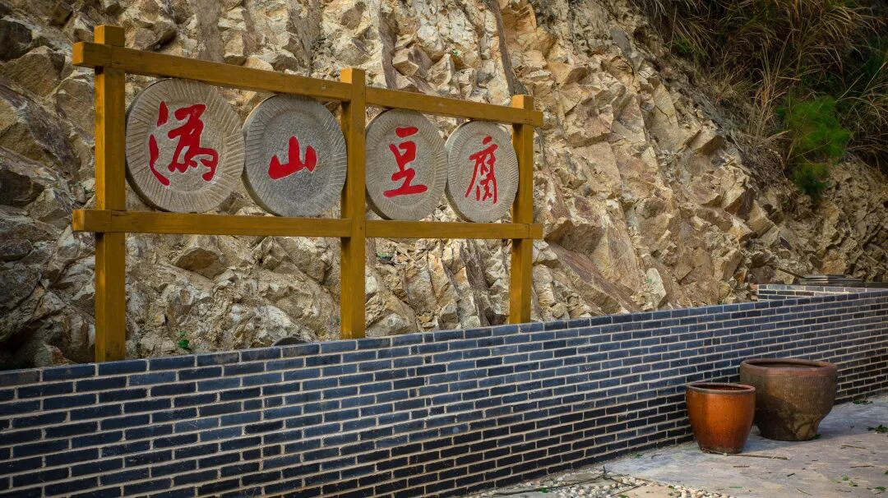
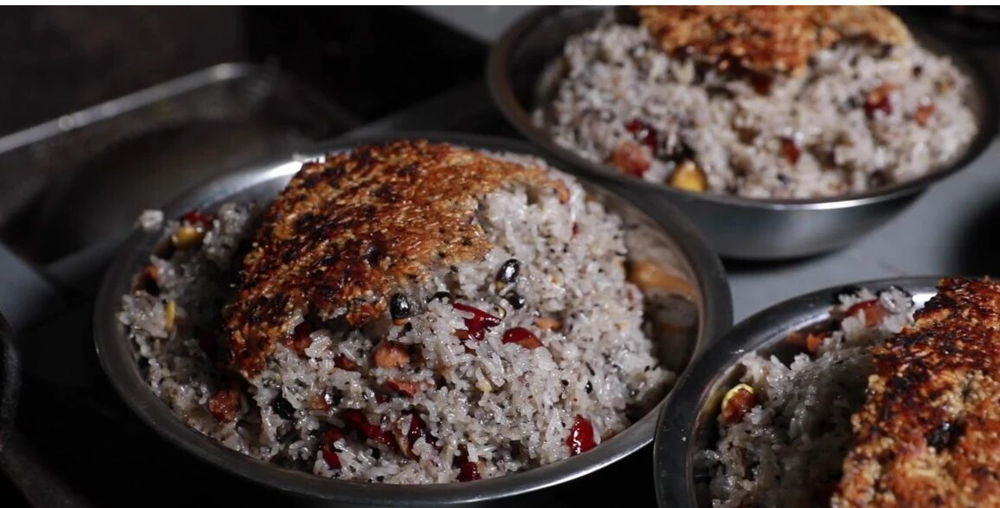
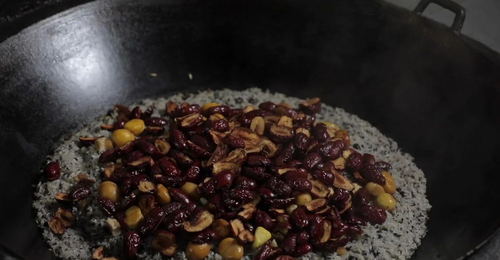
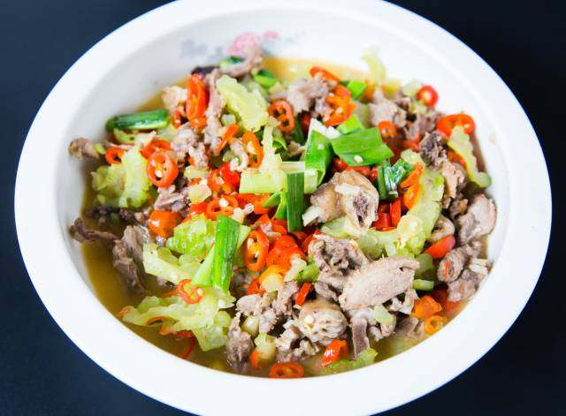
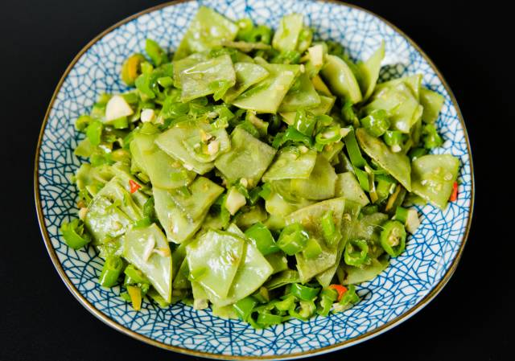
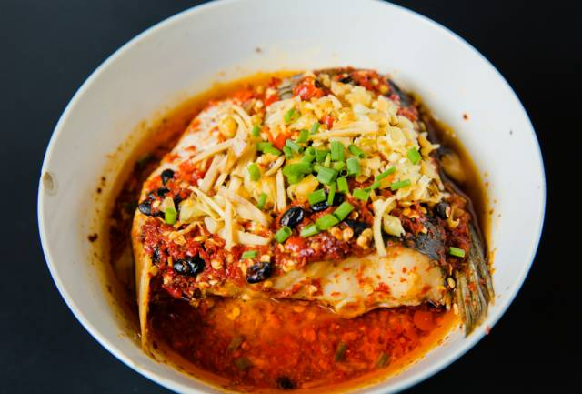

寻味 · 山珍
在村里的农家乐品沩山糯米饭，在沩山豆腐非遗传承馆里体验一把手工劳作的乐趣。舌尖上的沩山，每一道菜都带着山间的质朴与窑火的温度。
沩山豆腐
手工制作，豆香浓郁
推荐：山里人家窑工腊肉
柴火烟熏，琥珀色
腊肉节山里野菜
季节性采摘
春蕨 冬笋农家蒸菜
原汁原味
豆腐宴🍲 沩山豆腐
在湘东罗霄山脉北麓的怀抱中，藏着一座名为沩山的古老村落。这里不仅有千年窑火不熄的瓷业传奇，更孕育了一味清白动人的美食——沩山豆腐。它如同深山里走出的素朴佳人，凭借一抹纯净的豆香，温润了无数食客的味蕾。

沩山豆腐的传奇，源自一方水土的慷慨馈赠。村落隐匿于彭仙岭东南麓，四周泉清林茂，云雾缭绕。从山涧石缝中渗出的泉水，汇聚成望仙桥水库的万顷碧波。这水，不仅是山林的血液，更是沩山豆腐的灵魂。它清冽甘甜，富含人体所需的微量元素，仿佛是大自然精心调配的玉液。外地人慕名前来制作豆腐，往往也要不辞辛劳地取一桶沩山的泉水，因为他们深知，唯有这水，才能点化出豆腐最本真的模样。
好的风物，亦离不开人与时间的雕琢。沩山豆腐的美名，早在清朝雍正年间，便随着当地瓷业的兴盛而远播。时光流转至今日，手艺人依旧恪守着祖辈传下的法则。每当夜幕降临，山村归于沉寂，豆腐坊里却灯火通明。浸泡、磨浆、过滤、煮浆、点卤、压形……七道工序，全凭一双手感知温度与时间的秘密。那一方方豆腐，在木板与石磨的轻压下，悄然成型，如同被雕琢的白玉，细腻而温润。
当清晨的第一缕阳光穿透晨雾，新鲜的沩山豆腐便出锅了。它外表白嫩如玉，晃若凝脂，用勺子轻舀一块送入口中，豆香四溢，入口即化，口感细腻甜润。在醴陵人的餐桌上，它变幻无穷：入油锅煎至两面金黄，外皮酥脆，内里依然保持着一口鲜嫩的滑腻；下高汤慢火煨煮，它便吸饱了汤汁的精华，变得柔和滋润，滋味悠长。
如今，这方小小的豆腐，早已不再仅仅是果腹之物。它与沩山古窑、沩山古洞天并列为醴陵“三沩”文化，甚至作为非遗项目的一部分，吸引着人们前来亲手体验磨浆之乐。那一碗豆浆的醇厚，那一口豆腐的嫩滑，品味的是山水的清冽，是手作的温情，更是这片土地上生生不息的人间烟火。
🍽️ 品味沩山豆腐
- 特点：外皮酥香，内里滑嫩，因产于沩山村古窑区而享有盛名。
- 体验：游客可前往沩山豆腐非遗传承馆，亲手体验手工磨豆腐的乐趣。
- 推荐吃法：煎豆腐、煮豆腐、豆腐脑、凉拌豆腐
🍚 沩山糯米饭
传统的沩山糯米饭，是一场时间与火候的艺术修行。当地人必用本地产的“毛糯子”，历经两三个时辰的泉水浸泡，让其吸饱水分。灶膛里架起枯枝柴火，铁锅烧得滚烫，留一勺土法炼制的猪油，脂香即刻在空气中爆开。随后，将糯米与黑豆、板栗、芝麻，或是几粒腊肉丁一同下锅翻炒。在猛火的催促下，米粒与佐料渐渐相拥，直至“像初恋的小情人一样‘粑黏’在一起”。此时，注入清冽的山泉水，盖紧锅盖，先以一场轰轰烈烈的猛火煮沸，再转为文火慢焖。剩下的时光，便交给耳朵去聆听——那是锅底米粒渐渐金黄、锅巴正在滋滋成型的乐章，也是嗅觉备受“煎熬”的二十多分钟。

当锅盖掀开的瞬间，一股混合着米香、油香与板栗清甜的热浪扑面而来。米饭软糯Q弹，色泽油亮，每一粒都包裹着山野的馈赠。而最令人期待的，莫过于锅底那层金黄酥脆的锅巴，它是这一锅饭的精华，也是无数游子魂牵梦绕的“醴陵味道”。
这一碗糯米饭，因瓷而生，因窑而盛。往昔，它是陶工们干活的“标配”，耐饿且便于携带，手捏着便能吃，支撑起窑火边繁重的体力劳作，因此也被北乡人亲切地唤作“陶饭”。如今，它已从古窑工的餐食变成了声名在外的非遗美食。当你坐在沩山的农家小院里，用产自当地的瓷碗盛上这么一碗软糯喷香的米饭，望着远处的古窑遗址，吃的便不只是饭，更是一段薪火相传的瓷都旧事，一抹萦绕在舌尖的、温润如玉的醴陵风情。

🍚 品味沩山糯米饭
- 原料：选用本地“毛糯子”，搭配黑豆、板栗、芝麻、红枣等山野精粹及土法猪油。
- 工艺：糯米经长时间泉水浸泡后，以柴火铁锅猛火快炒，加入山泉水后先猛火煮沸再转文火慢焖，让米粒充分融合，最终形成一锅软糯喷香、兼具锅巴脆香的糯米饭。
- 特点：米饭软糯Q弹，色泽油亮，混合着糯米香、板栗的清甜。
🌿 醴陵特色菜

苦瓜炒仔鸭
夏季特色，清苦回甘
苦瓜炒仔鸭具有清热祛暑、明目解毒、降压降糖、利尿凉血、解劳清心、益气壮阳之功效。农家自养土鸭，天然饲料，让每一只鸭肉质显得更加鲜美，苦瓜都是自己栽种，原汁原味，味道鲜美，让人垂涎。
醴陵小炒肉
鲜香入味，醴陵代表菜
醴陵小炒肉是家常菜的一种，既不油腻，又营养丰富，肉嫩汤甜。伴着饭吃，可以连着吃上好几碗。
西葫芦丝儿
清脆爽口
用最简单的食材做出最美味的菜肴，农村的西葫芦个个饱满、皮薄、肉厚、汁多。味道肉嫩可口、清香微甜，不但能润泽肌肤，还可以调节人体代谢。

青椒鹅明豆
健康绿色
青椒鹅明豆绝对称得上每家每户都喜欢的家常菜了，鹅明豆搭配青椒，大自然的颜色，健康绿色的美味。

醴陵蒸鱼尾
传统做法，鲜嫩可口
鱼的鲜在于其生活的水质，天然的山水，让鱼肉味道不带有杂味，每一丝肉都鲜嫩滑。
— 实拍图集 & 推荐食肆：沩山老灶、古道饭庄 —